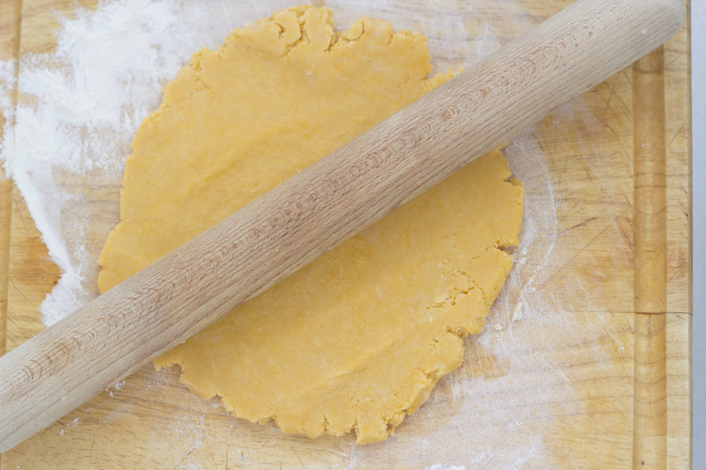

Homemade Pasta
Homemade pasta dough is a fun and delicious way to step up your pasta
game! With just 2 ingredients, spirit, and a lot of kneading you will be
able to enjoy this dish that people have been making for hundreds of years.
ETA
Total: 60 minutes
Ingredients
Instructions
- Pour 1 to 2 cups of flour onto a counter in a pile and make a hole in
the middle of the pile so it looks like a volcano.
- Crack 2 eggs and put them in the center of the "volcano."
- Using a fork, start whisking the eggs together while slowly incorporating some flour each whisk.
- Once the eggs turn too solid to whisk, begin kneading the mixture with your hands. (Make sure they are washed, of course!)
- After 5-15 minutes, a smooth dough will form. Once this happens, wrap
the dough in plastic wrap and let it sit for 30 minutes.
- After it is done sitting, cut the dough in half and roll each half until thin.
- Cut the dough into 1/4 inch strands and toss the strands together with
flour.
- From here you are finished! You can either freeze the dough for
another day or cook it now. When cooking the dough remember, homemade pasta
cooks much faster than store-bought pasta and the pasta water you cook the
pasta in is full of flavor and starch that can be used for another dish.